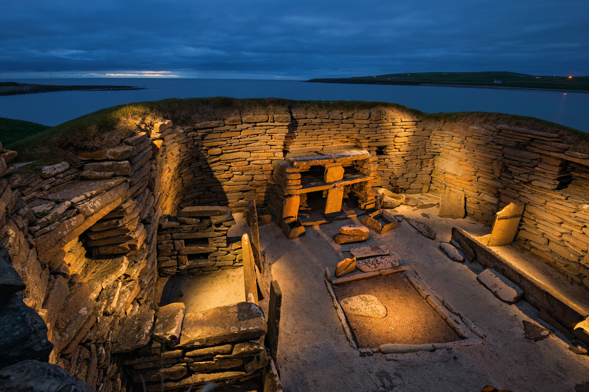

Is alles aan het Neolithicum voordelig?
De neolithische revolutie bracht grote veranderingen met zich mee. Maar waren die allemaal positief? Hieronder zie je enkele van de belangrijkste voordelen en nadelen op een rij.
Voordelen
- Meer voedselopbrengst per oppervlakte
- Voedseloverschotten konden opgeslagen worden
- Dieren leverden spierkracht, wol, melk en mest
- Vast wonen (sedentair) werd mogelijk
- Specialisatie en handel ontstonden
Nadelen
- Zwaar werk op het land
- Risico op mislukte oogst en honger
- Monotone voeding → slechtere mondgezondheid
- Korte levensverwachting van boeren
- Vee bracht infectieziekten met zich mee
Door de bevolkingsgroei werd het onmogelijk om ooit terug te keren naar de nomadische levensstijl zonder massale sterfte. Het Neolithicum bracht dus veel goeds, maar had ook een prijs.